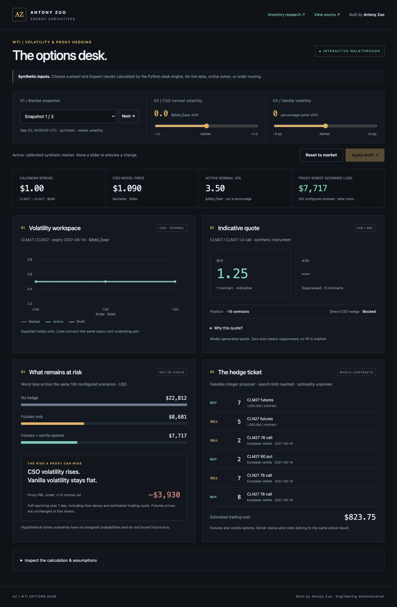
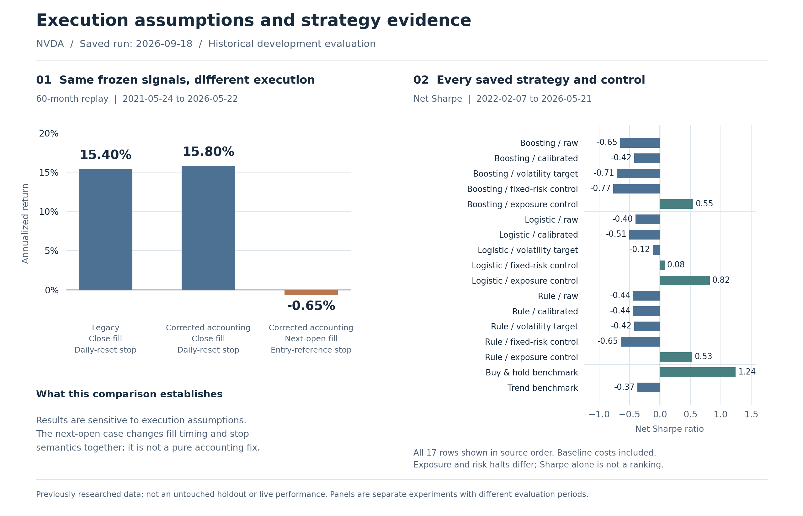
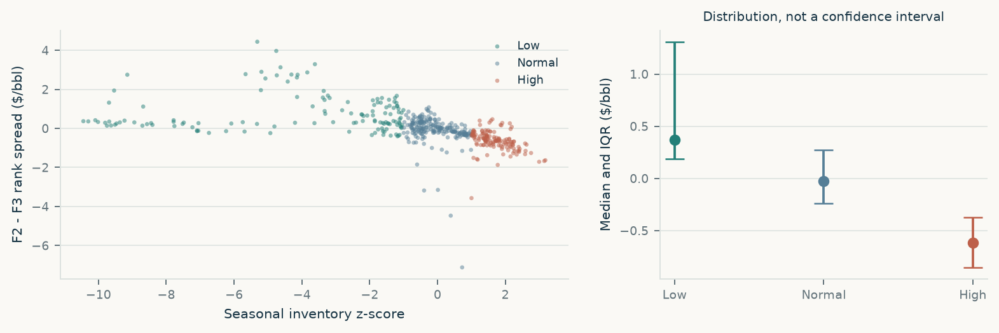

01Synthetic engineering demo
WTI Options Desk
What remains at risk after a proxy hedge?
Option valuation, integer hedge tickets and scenario losses with explicit trading costs.
45 stored cases · 100 stress scenarios
INDEPENDENT RESEARCH / PYTHON
Option valuation, whole-contract hedging and auditable trading research.
From an explicit assumption to a result you can inspect.
What remains at risk after a proxy hedge?
Option valuation, integer hedge tickets and scenario losses with explicit trading costs.
45 stored cases · 100 stress scenarios
Does a backtest survive different execution assumptions?
Chronological model comparisons, reconciled trade accounting and cost sensitivity.
18 walk-forward folds · 1× / 2× / 4× costs
When does inventory explain the shape of the WTI curve?
Publication-aligned data, seasonal controls and tests of stability across years.
481 matched observations · 2015–24
Results, assumptions and implementation travel together.
The desk connects volatility inputs to indicative quotes, whole-contract hedge tickets and remaining scenario risk. Inspect the complete Python workflow and the evidence behind the public walkthrough.
Synthetic inputs and precomputed cases. Scenario losses are not historical returns or loss bounds.

Compare saved signals under different execution and stop assumptions, then inspect all 17 strategy and control variants. Negative outcomes, risk halts and cost stress remain visible.
Main input data ends May 22, 2026. Historical development evaluation; no untouched holdout or live performance record claimed.

Cushing inventories relate strongly to WTI spreads in pooled history. Year and season controls, sensitivity checks and dated case studies show why that is not enough to establish a trading rule.
EIA public-data sample: January 2015–April 2024. Delivery-rank quotes are not fixed tradable contract pairs.

I build research tools that make assumptions, costs and failure modes inspectable. My work spans options risk, execution modeling and commodity-market research.
View repositories ↗